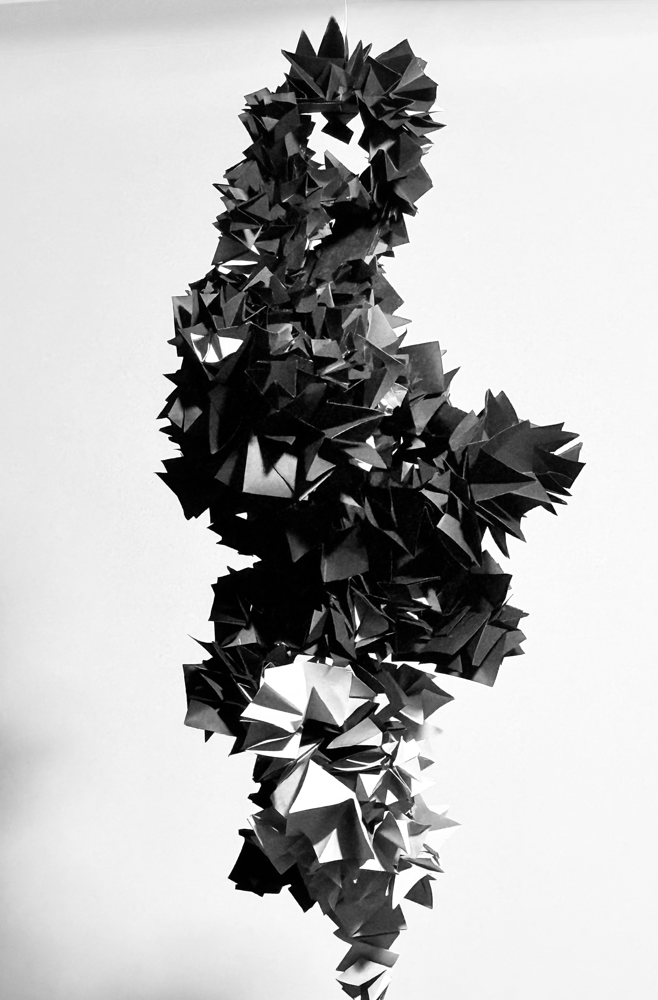
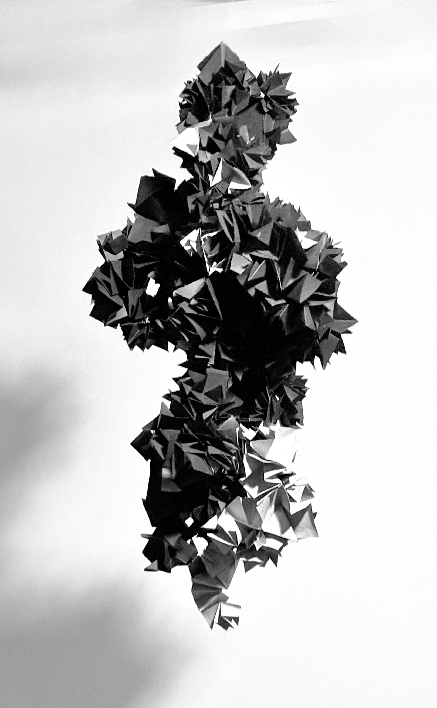
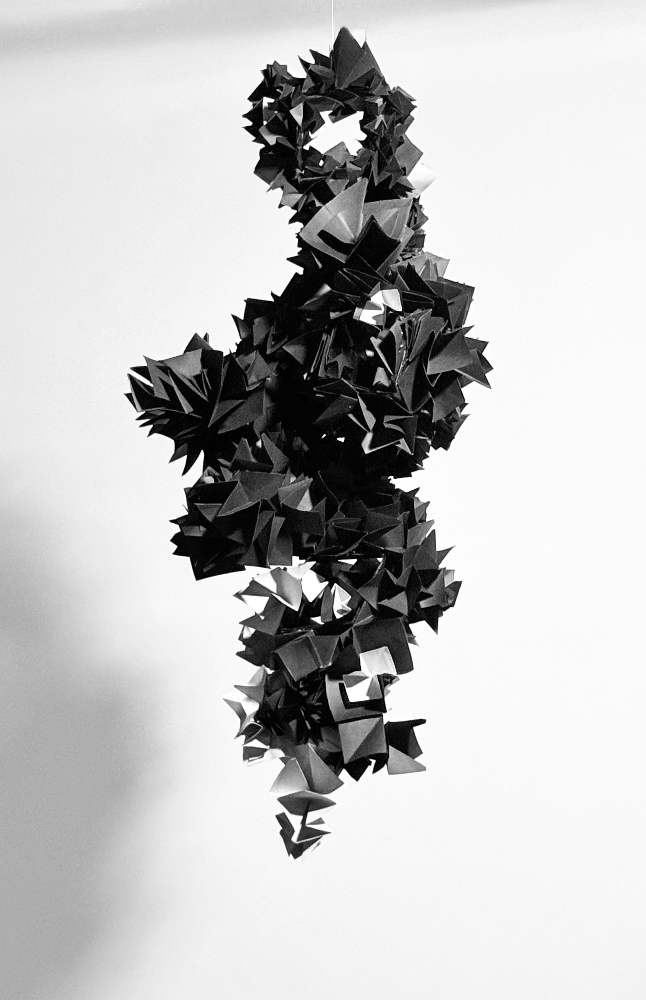

Paper Forms
BackThe intention of this piece is to create a sculptural form that emphasizes value, shadow, and contrast as primary visual drivers. Rather than prioritizing literal representation, the work focuses on how light interacts with form to create depth, tension, and visual rhythm. Through deliberate manipulation of planes and surfaces, the sculpture invites the viewer to move around it, allowing shifting shadows and highlights to continuously redefine the shape. This piece was created in pursuit of a visually compelling and aesthetically engaging form, where contrast is not only a formal element but a tool for directing attention and shaping perception.



